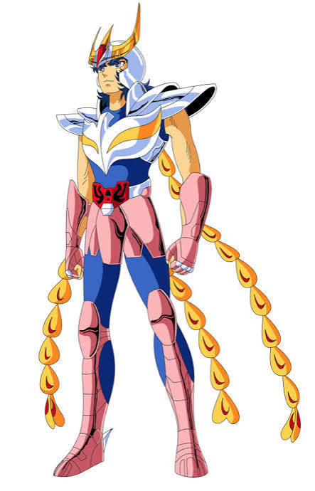

*** CAVALEIROS DO ZODÍACO - SAINT SEIYA ***
Bem-vindo à área do Santuário! Aqui prestamos homenagem a uma das maiores lendas dos animes no Brasil. Relembre o criador Masami Kurumada, as batalhas lendárias e o RPG épico de NES que marcou a época dos emuladores!

 A Origem: Masami Kurumada e o Fenômeno
A Origem: Masami Kurumada e o Fenômeno
Criado pelo mestre Masami Kurumada em 1986 na famosa revista Weekly Shōnen Jump, Saint Seiya (Os Cavaleiros do Zodíaco) revolucionou o gênero de ação ao misturar mitologia grega, constelações astronômicas e armaduras de metal reluzentes.
Produzido pela Toei Animation, o anime tornou-se uma febre avassaladora no Brasil a partir de 1994, exibido pela inesquecível Rede Manchete. A saga da Guerra Galáctica até a travessia das Doze Casas para salvar a Deusa Atena uniu milhões de fãs diante da TV todas as tardes.

O RPG de NES e a Febre das ROMs Traduzidas
Nos anos 80 e 90, a Bandai lançou para o Nintendo Famicom/NES o jogo Saint Seiya: Ougon Densetsu (A Lenda dos Cavaleiros de Ouro). Por muitos anos, esse título parecia inacessível por ter sido lançado oficialmente apenas em japonês.
Com a chegada dos emuladores de NES (como o lendário Nesticle) nos anos 90, os grupos de Fan Translation (tradução feita por fãs na internet) fizeram história! Eles aplicaram *patches* em português na ROM original, permitindo que a comunidade finalmente entendesse a história, os menus de atributos de Cosmo e as falas dos Cavaleiros de Ouro.
A Fidelidade entre o Game de NES e o Anime
O jogo de NES foi um dos primeiros a fundir fases de plataforma em rolagem lateral com um sistema completo de RPG por turnos durante as grandes lutas de chefes:
- Gerenciamento de Cosmo: Assim como na série animada, onde o cavaleiro precisa queimar sua energia vital, no jogo você precisa distribuir pontos de Cosmo para ataque e defesa a cada turno. Sem Cosmo, seus golpes não causam dano!
- Alcançando o 7º Sentido: Durante o confronto com os Cavaleiros de Ouro no Santuário, o jogador é forçado a despertar o Sétimo Sentido para igualar seu poder ao dos adversários mais fortes.
- Escolha do Cavaleiro Certo: Igualzinho ao anime, você pode escolher qual Cavaleiro de Bronze (Seiya, Shiryu, Hyoga, Shun ou Ikki) enviará para cada batalha nas Doze Casas, respeitando a narrativa do seriado!
© Todos os direitos reservados.
Gemini IA ajudou a editar esse conteúdo.